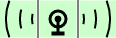
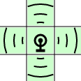
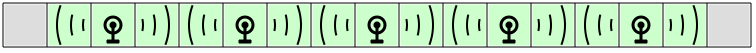
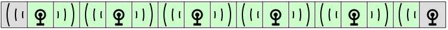
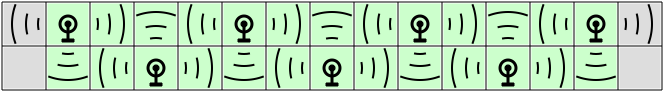
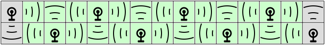
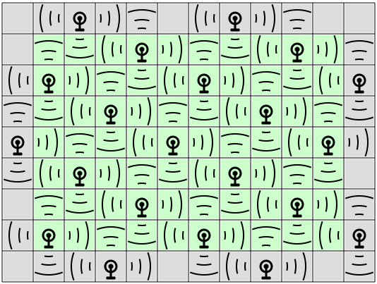
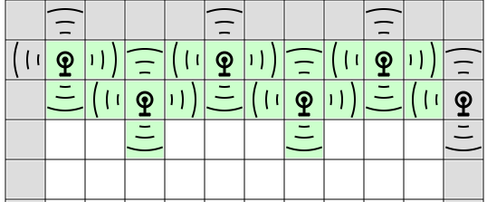
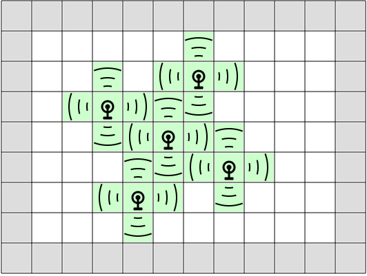

|
Lisää (ja poista) klikkaamalla ruutuihin (valkoisiin ja harmaisiin) antenneja niin, että antennien kantamat kattavat kaikki valkoiset ruudut. Antennien kantamat eivät saa mennä päällekkäin toistensa kanssa! |


|
Antennit voi asetella suoraviivaisesti peräkkäin valkoisiin ruutuihin.

Toinen ratkaisuvaihtoehto käyttää myös harmaita ruutuja.

Antennit asetellaan peräkkäin, mutta vuorotellen eri riveille.

Toinen ratkaisuvaihtoehto käyttää myös harmaita ruutuja.

Perusidea on asetella antennit systemaattisesti säännöllisiin paikkoihin.

On myös muita ratkaisuita (jotka kuitenkin ovat tämän ratkaisun peilikuvia tai rotaatioita).
Tehtävä on esimerkki peiteongelmasta ("tessellaatio"), jossa halutaan peittää jokin pinta tietyn muotoisilla laatoilla niin, etteivät laatat mene päällekkäin. Katso lisää esim. https://fi.wikipedia.org/wiki/Tessellaatio.
Voimme etsiä ratkaisua asettamalla ensin antennin johonkin kohtaan, ja yrittämällä sitten asetella askeleittain sen naapurustoon lisää antenneja niin, ettei väleihin jää tyhjiä ruutuja eivätkä antennien kantamat mene päällekkäin.
Jos annettu ruudukko on suuri, törmäämme helposti tilanteeseen, jossa ei löydykään mitään laillista tapaa kattaa kaikki ruudut antenneilla. Alla on esimerkki tällaisesta tilanteesta: toiseksi alimman näkyvän rivin 3 ruudun pituisia tyhjiä jaksoja on mahdotonta kattaa lisäantenneilla ilman päällekkäisyyttä.

Jos ajaudumme tällaiseen umpikujaan, pitää palata alkuun ja yrittää aloittaa antennien asettelu toisella tapaa. Jos toimimme riittävän systemaattisesti (ja ongelmaan on olemassa ratkaisu), löydämme ennen pitkää antennien asettelutavan, joka ei johda umpikujaan. Alla on esimerkki 5 antennin alkuasetelmasta, josta voidaan suoraviivaisesti jatkaa kattamaan koko ruudukko.

Tällaista ratkaisun etsintätapaa kursutaan tietojenkäsittelyssä nimellä peruuttava haku. Samantapaista ratkaisumenetelmää voitaisiin soveltaa esimerkiksi Sudoku-ruudukon ratkaisuun.